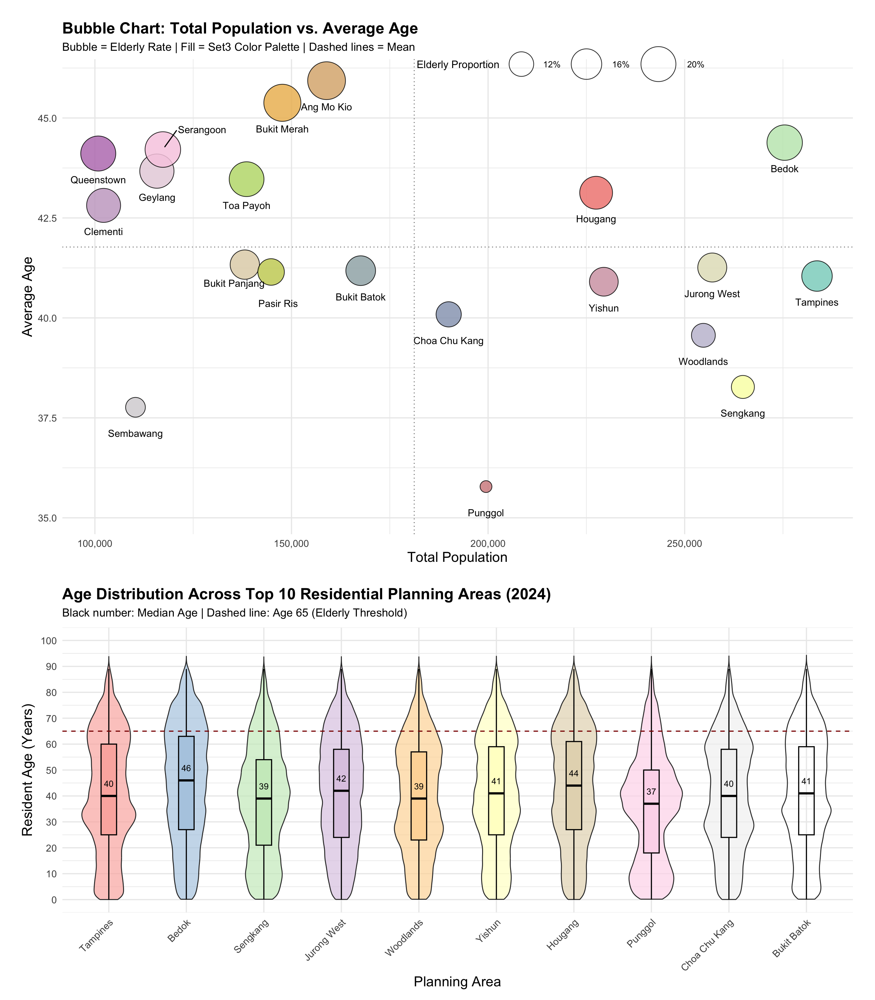
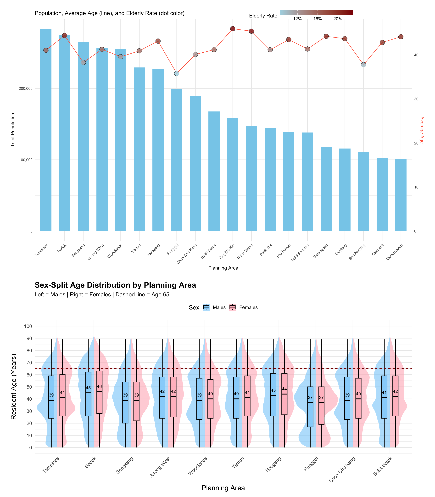

pacman::p_load(scales, ggrepel, patchwork,
ggthemes, hrbrthemes,tidyverse,
tidytext,treemapify, dplyr, RColorBrewer, grid,gghalves) Take-home Exercise 1–Phase 2
Evaluation and improvement of classmates’ visual works
1 Overview
For the second phase of Take-home Exercise 1, we are required to critically review a data visualization submitted by one of our classmates. This involves identifying and explaining three effective design principles demonstrated in their work, as well as highlighting three areas for potential improvement. Based on this critique, we are expected to develop a revised or “makeover” version of their visualization that addresses the identified weaknesses while preserving the original message and intent.
In this part, I will conduct a critical analysis of the visualization submitted by my classmate Tai Qiuyan, discussing three strengths in design and proposing improvements to enhance clarity, effectiveness, and visual communication.
2 Load packages and import data
| name | purpose |
|---|---|
scales |
Nicely formats axis ticks and legends. |
ggrepel |
Adds non‑overlapping text labels to ggplots. |
patchwork |
Combines multiple ggplots into a single figure. |
ggthemes |
Supplies predefined aesthetic themes. |
hrbrthemes |
Extends ggthemes with modern, typographically friendly themes and font support. |
tidyverse |
Meta‑package that loads ggplot2, dplyr, tidyr, readr, stringr, forcats, etc. — the backbone for data import, transformation, and visualisation. |
tidytext |
Tokenises and analyses text. |
treemapify |
Creates ggplot‑compatible treemaps. |
dplyr |
Provides a fast, consistent, and intuitive set of functions for data manipulation, including filtering, selecting, grouping, summarising, and joining data frames. |
The code imports the dataset respopagesex2024.csv and load the CSV file into a dataframe named population_data.
After import, the mutate() function is applied to convert the Age column from character to numeric format.
population_data <- read_csv("data/respopagesex2024.csv") %>%
mutate(Age = as.numeric(Age)) glimpse() function provides a concise overview of the dataset’s structure, displaying column names, data types, and sample values.
glimpse(population_data)Rows: 60,424
Columns: 6
$ PA <chr> "Ang Mo Kio", "Ang Mo Kio", "Ang Mo Kio", "Ang Mo Kio", "Ang Mo K…
$ SZ <chr> "Ang Mo Kio Town Centre", "Ang Mo Kio Town Centre", "Ang Mo Kio T…
$ Age <dbl> 0, 0, 1, 1, 2, 2, 3, 3, 4, 4, 5, 5, 6, 6, 7, 7, 8, 8, 9, 9, 10, 1…
$ Sex <chr> "Males", "Females", "Males", "Females", "Males", "Females", "Male…
$ Pop <dbl> 10, 10, 10, 10, 10, 10, 10, 10, 30, 10, 20, 10, 20, 30, 30, 10, 3…
$ Time <dbl> 2024, 2024, 2024, 2024, 2024, 2024, 2024, 2024, 2024, 2024, 2024,…3 Original visualization
The original visualization is from my classmate Tai Qiuyan. Please click on this link to view her original visualization report or obtain more information.
3.1 Data cleaning and preparation
Tip
All data import, data processing, and variable naming in the original visualisation strictly follow the code submitted by the classmate.
violin_data <- population_data %>%
mutate(Age = as.numeric(Age)) %>%
filter(!is.na(Age), !is.na(PA)) %>%
group_by(PA, Age) %>%
summarise(Pop = sum(Pop), .groups = "drop") %>%
uncount(weights = Pop)
top10_PAs <- population_data %>%
group_by(PA) %>%
summarise(Total_Pop = sum(Pop), .groups = "drop") %>%
arrange(desc(Total_Pop)) %>%
slice_head(n = 10) %>%
pull(PA)
violin_filtered <- violin_data %>%
filter(PA %in% top10_PAs) %>%
mutate(PA = factor(PA, levels = top10_PAs))
top20_PAs <- population_data %>%
group_by(PA) %>%
summarise(Total_Pop = sum(Pop), .groups = "drop") %>%
arrange(desc(Total_Pop)) %>%
slice_head(n = 20) %>%
pull(PA)
pa_summary20 <- violin_data %>%
filter(PA %in% top20_PAs) %>%
mutate(AgeGroup = if_else(Age > 65, "Elderly", "Other")) %>%
group_by(PA) %>%
summarise(
Avg_Age = mean(Age),
Total_Pop = n(),
Elderly_Prop = mean(AgeGroup == "Elderly"),
.groups = "drop"
)3.2 Visualization
# palette for all 20 PAs
area_colors_all <- colorRampPalette(
RColorBrewer::brewer.pal(10, "Set3")
)(20)
names(area_colors_all) <- top20_PAs
# Violin plot
p1 <- ggplot(violin_filtered, aes(x = PA, y = Age, fill = PA)) +
geom_violin(trim = FALSE, scale = "area", width = 0.8, alpha = 0.7) +
geom_boxplot(width = 0.1, outlier.shape = NA, color = "black") +
scale_fill_manual(values = area_colors_all[top10_PAs]) +
labs(
title = "Age Distribution by Planning Area (Top 10 Residential Areas)",
x = "Planning Area",
y = "Age"
) +
theme_minimal(base_size = 14) +
theme(
legend.position = "none",
axis.text.x = element_text(angle = 45, hjust = 1),
axis.title = element_text(size = 16),
plot.title = element_text(face = "bold", size = 18)
)
# Scatter plot
p2 <- ggplot(pa_summary20, aes(
x = Total_Pop,
y = Avg_Age,
size = Elderly_Prop,
fill = PA
)) +
geom_point(shape = 21, alpha = 0.8, color = "black") +
geom_text_repel(aes(label = PA), size = 4, max.overlaps = 30) +
scale_fill_manual(values = area_colors_all, guide = FALSE) +
scale_size_continuous(
name = "Elderly Proportion",
range = c(6, 20)
) +
scale_x_continuous(labels = scales::comma) +
labs(
title = "Average Age vs. Total Population (Top 20 Planning Areas)",
x = "Total Population",
y = "Average Age"
) +
theme_minimal(base_size = 14) +
theme(
legend.position = "right",
legend.title = element_text(size = 14),
legend.text = element_text(size = 12),
axis.title = element_text(size = 16),
plot.title = element_text(face = "bold", size = 18)
)
# combine
(p2 / p1) + plot_layout(heights = c(1, 0.6))4 Evaluation and Improvement
4.1 Good design principles
This visualization effectively integrates total population, average age, and elderly proportion into a single bubble chart, enabling users to compare the scale and aging level of multiple planning areas at a glance through a multidimensional view.
The use of consistent and vibrant color schemes across both charts ensures that the same planning areas are easily recognizable, enhancing readability and supporting a visually coherent interpretation across different visual elements.
The two charts complement each other: the upper bubble chart provides a macro-level overview of population characteristics, while the lower violin plot reveals detailed age distribution patterns, together offering a more comprehensive and in-depth understanding of demographic structures.
4.2 Further improvement
The y-axis of the violin plot lacks a clear label indicating that it represents age, and the wide scale range (0–75) without finer graduations makes it difficult for viewers to interpret the exact distribution. Adding a descriptive axis title and refining the scale would improve clarity.
In the bubble chart, some labels—such as those for Geylang and Serangoon—overlap with the bubbles or appear too densely packed, reducing legibility. This could be improved by repositioning the labels or abbreviating long area names to avoid visual clutter.
The violin plot does not include median lines or reference markers such as the age of 65, making it harder to quickly identify central tendencies or distinguish age structure differences across areas. Including such markers and enlarging the box plots would enhance interpretability.
The legend for the bubble chart is positioned too close to the bottom chart, disrupting the overall layout balance and drawing attention away from the data. Relocating the legend to the upper-right empty space and resizing it appropriately would create a more harmonious and visually balanced design.
4.3 Makeover version
4.3.1 Data Prepare
The population_data was preprocessed specifically for violin plot visualization, aiming to generate age distribution data grouped by gender, in order to show the age structure of different genders across the top 10 most populous planning areas.
violin_gender_split <- population_data %>%
filter(PA %in% top10_PAs) %>%
mutate(Age = as.numeric(Age)) %>%
filter(!is.na(Sex), !is.na(Age)) %>%
group_by(PA, Sex, Age) %>%
summarise(Pop = sum(Pop), .groups = "drop") %>%
uncount(weights = Pop) %>%
mutate(
Sex = factor(Sex, levels = c("Females", "Males")),
PA = factor(PA, levels = top10_PAs)
)4.3.2 Markover Version 1

area_colors_all <- colorRampPalette(RColorBrewer::brewer.pal(10, "Set3"))(20)
names(area_colors_all) <- top20_PAs
p5 <- ggplot(pa_summary20, aes(x = Total_Pop,
y = Avg_Age,
size = Elderly_Prop)) +
geom_point(
fill = area_colors_all[pa_summary20$PA],
shape = 21,
stroke = 0.6,
alpha = 0.85,
color = "black",
show.legend = TRUE
) +
geom_text_repel(
data = subset(pa_summary20,
PA == "Serangoon"),
aes(label = PA),
size = 4,
box.padding = 0.5,
point.padding = 0.6,
segment.color = "black",
segment.size = 0.6,
min.segment.length = 0,
force = 4,
nudge_y = 0.5,
nudge_x = 10000
) +
geom_text_repel(
data = subset(pa_summary20,
PA != "Serangoon"),
aes(label = PA),
size = 4,
box.padding = 0.5,
point.padding = 0.5,
segment.alpha = 0,
force = 3,
nudge_y = -0.65
) +
scale_size_continuous(
name = "Elderly Proportion",
range = c(6, 20),
labels = percent_format(accuracy = 1)
) +
geom_vline(xintercept = mean(pa_summary20$Total_Pop), linetype = "dotted", color = "grey50") +
geom_hline(yintercept = mean(pa_summary20$Avg_Age),
linetype = "dotted",
color = "grey50") +
scale_x_continuous(labels = comma) +
labs(
title = "Bubble Chart: Total Population vs. Average Age",
subtitle = "Bubble = Elderly Rate | Fill = Set3 Color Palette | Dashed lines = Mean",
x = "Total Population",
y = "Average Age"
) +
theme_minimal(base_size = 14) +
theme(
legend.position = c(0.82, 1.05),
legend.direction = "horizontal",
legend.justification = c("right", "top"),
legend.key.size = unit(0.8, "lines"),
legend.title = element_text(size = 12),
legend.text = element_text(size = 10),
axis.title = element_text(size = 16),
plot.title = element_text(size = 18, face = "bold"),
plot.subtitle = element_text(size = 13),
plot.margin = margin(20, 20, 20, 20)
)
pd <- ggplot(violin_filtered, aes(x = PA,
y = Age,
fill = PA)) +
geom_violin(trim = FALSE,
scale = "area",
width = 0.8,
alpha = 0.7) +
geom_boxplot(width = 0.2,
outlier.shape = NA,
color = "black",
linewidth = 0.6) +
stat_summary(
fun = median,
geom = "text",
aes(label = round(..y.., 0)),
color = "black",
size = 3.5,
vjust = -1.5
) +
geom_hline(yintercept = 65,
linetype = "dashed",
color = "darkred",
linewidth = 0.6) +
scale_fill_brewer(palette = "Pastel1") +
scale_y_continuous(
limits = c(0, 100),
breaks = seq(0, 100, by = 10)
) +
labs(
title = "Age Distribution Across Top 10 Residential Planning Areas (2024)",
subtitle = "Black number: Median Age | Dashed line: Age 65 (Elderly Threshold)",
x = "Planning Area",
y = "Resident Age (Years)"
) +
theme_minimal(base_size = 14) +
theme(
legend.position = "none",
axis.text.x = element_text(angle = 45,
hjust = 1),
axis.title = element_text(size = 16),
plot.title = element_text(face = "bold",
size = 18),
plot.subtitle = element_text(size = 13,
margin = margin(b = 10))
)
(p5 / pd) + plot_layout(heights = c(1, 0.6))4.3.3 Markover Version 2

max_pop <- max(pa_summary20$Total_Pop)
pb <- ggplot(pa_summary20, aes(x = PA)) +
geom_col(aes(y = Total_Pop), fill = "skyblue",
width = 0.6) +
geom_line(aes(y = Avg_Age * max_pop / max(pa_summary20$Avg_Age),
group = 1),
color = "tomato",
size = 0.5) +
geom_point(aes(y = Avg_Age * max_pop / max(pa_summary20$Avg_Age),
fill = Elderly_Prop),
shape = 21, size = 5,
stroke = 0.4,
color = "black",
alpha = 0.8) +
scale_fill_gradient(low = "lightblue",
high = "darkred",
name = "Elderly Rate",
labels = percent) +
scale_y_continuous(
name = "Total Population",
labels = comma,
sec.axis = sec_axis(~ . * max(pa_summary20$Avg_Age) / max_pop,
name = "Average Age")
) +
labs(
title = "Population, Average Age (line), and Elderly Rate (dot color)",
x = "Planning Area"
) +
theme_minimal() +
theme(
axis.text.x = element_text(angle = 45, hjust = 1),
axis.title.y.right = element_text(color = "tomato"),
legend.position = c(0.85, 1.05),
legend.direction = "horizontal",
legend.justification = c("right", "top"),
legend.key.width = unit(1.2, "cm"),
legend.key.height = unit(0.4, "cm"),
legend.title = element_text(size = 12),
legend.text = element_text(size = 10),
plot.margin = margin(20, 20, 20, 20)
)
offset <- 0.15
pa <- ggplot(violin_gender_split, aes(x = PA,
y = Age,
fill = Sex)) +
geom_half_violin(data = subset(violin_gender_split,
Sex == "Males"),
side = "l",
alpha = 0.6,
trim = FALSE,
color = NA,
width = 1.2) +
geom_half_violin(data = subset(violin_gender_split,
Sex == "Females"),
side = "r",
alpha = 0.6,
trim = FALSE,
color = NA,
width = 1.2) +
geom_boxplot(data = subset(violin_gender_split,
Sex == "Males"),
width = 0.15,
outlier.shape = NA,
alpha = 0.7,
position = position_nudge(x = -offset),
color = "black") +
geom_boxplot(data = subset(violin_gender_split,
Sex == "Females"),
width = 0.15, outlier.shape = NA,
alpha = 0.7,
position = position_nudge(x = offset),
color = "black") +
stat_summary(data = subset(violin_gender_split,
Sex == "Males"),
fun = median,
geom = "text",
aes(label = round(..y.., 0)),
position = position_nudge(x = -offset),
vjust = -1.2, size = 3.5,
color = "black") +
stat_summary(data = subset(violin_gender_split,
Sex == "Females"),
fun = median,
geom = "text",
aes(label = round(..y.., 0)),
position = position_nudge(x = offset),
vjust = -1.2,
size = 3.5,
color = "black") +
scale_fill_manual(values = c("Males" = "#87CEFA",
"Females" = "#FFB6C1")) +
geom_hline(yintercept = 65,
linetype = "dashed",
color = "darkred",
linewidth = 0.6) +
labs(
title = "Sex-Split Age Distribution by Planning Area",
subtitle = "Left = Males | Right = Females | Dashed line = Age 65",
x = "Planning Area",
y = "Resident Age (Years)",
fill = "Sex"
) +
theme_minimal(base_size = 14) +
theme(
axis.text.x = element_text(angle = 45, hjust = 1),
axis.title = element_text(size = 16),
plot.title = element_text(size = 18, face = "bold"),
plot.subtitle = element_text(size = 13),
legend.position = "top"
)
(pb / pa) + plot_layout(heights = c(1, 0.6))